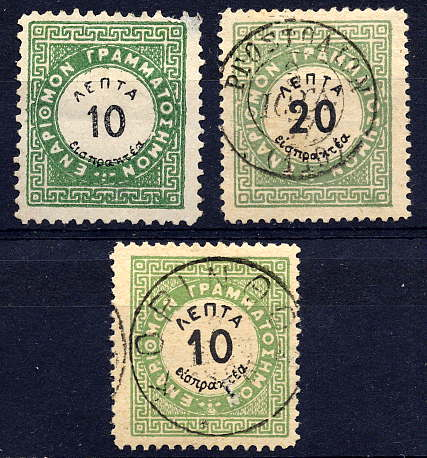

Return To Catalogue - Greece overview
Note: on my website many of the
pictures can not be seen! They are of course present in the
catalogue;
contact me if you want to purchase the catalogue.
1 l green and black 2 l green and black 5 l green and black 10 l green and black 20 l green and black 40 l green and black 60 l green and black 70 l green and black 80 l green and black 90 l green and black 100 l green and black 200 l green and black 1 D green and black 2 D green and black
Specialists distinguish between small and large inscriptions of the black text. A large variety of perforations exists, also imperforate stamps are known.
Value of the stamps |
|||
vc = very common c = common * = not so common ** = uncommon |
*** = very uncommon R = rare RR = very rare RRR = extremely rare |
||
| Value | Unused | Used | Remarks |
| Cheapest types | |||
| 1 l | * | * | |
| 2 l | * | * | |
| 5 l | * | * | |
| 10 l | * | * | |
| 20 l | * | * | |
| 40 l | ** | ** | |
| 60 l | ** | ** | |
| 70 l | *** | *** | |
| 80 l | *** | *** | |
| 90 l | *** | *** | |
| 100 l | *** | *** | |
| 200 l | *** | *** | |
| 1 D | *** | *** | |
| 2 D | *** | *** | |


The forger Fournier made forgeries of these
stamps. I have seen them with the following cancels:
RGOSTOLION 3 IOGL. 77 (110)
PAEOI 1 NOEM. 75 *
AQHNAI 22 LIIR. 10-P 1896 6 6
KORINQOS 2 IEKEM 1896
Lozenge with dots


The above Fournier forgeries with 'FAUX' overprint are from a 'Fournier Album of Philatelic Forgeries'.

Some forged Fournier cancels, obtained from a 'Fournier Album of
Philatelic Forgeries', the first cancel was used for Serbia.
Senf made a forgery of the 1 D value, this forgery was distributed freely with the stamp journal: 'Illustriertem Briefmarken Journal' (No 16, 20th August 1887):

This forgery always has 'Facsimile' in small letters on top of the stamp (the perforation was printed in).

1 l brown 1 l green (1913) 2 l grey 2 l red (1913) 3 l orange 3 l red (1913) 5 l green 10 l red 20 l lilac 25 l blue 30 l violet 30 l red (1913) 40 l brown 40 l blue (1913) 50 l red 50 l lilac (1913) 80 l violet (1924) 1 D black 1 D blue (1913) 2 D yellow 2 D red (1913) 3 D grey 3 D red (1913) 5 D orange 5 D blue (1913) 10 D green (1930) 10 D red (19??) 15 D brown (1930) 25 D red (1930) 25 D blue (19??) 50 D orange (1935) 100 D green (1935) 100 D black (19??) 200 D lilac (19??) Surcharged '50' on 30 l red
The stamps issued in 1902 have perforation 14, the ones issued in 1913 are rouletted.
Value of the stamps |
|||
vc = very common c = common * = not so common ** = uncommon |
*** = very uncommon R = rare RR = very rare RRR = extremely rare |
||
| Value | Unused | Used | Remarks |
| 1 l brown | c | c | |
| 1 l green | vc | vc | |
| 2 l grey | c | c | |
| 2 l red | vc | vc | |
| 3 l orange | c | c | |
| 3 l red | vc | vc | |
| 5 l | vc | vc | |
| 10 l | vc | vc | |
| 20 l | vc | vc | |
| 25 l | c | c | |
| 30 l violet | c | c | |
| 30 l red | c | c | |
| 40 l brown | * | * | |
| 40 l blue | c | c | |
| 50 l red | * | * | |
| 50 l lilac | c | c | |
| 1 D black | * | * | |
| 1 D blue | c | c | |
| 2 D yellow | ** | ** | |
| 2 D red | * | * | |
| 3 D grey | ** | ** | |
| 3 D red | * | * | |
| 5 D orange | *** | *** | |
| 5 D blue | * | * | |
Overprinted with greek text (1912)

1 l brown 2 l grey 3 l orange 5 l green 10 l red 20 l lilac 30 l violet 40 l brown 50 l red 1 D black 2 D yellow 3 D grey 5 D orange
The overprint exists in red or black, reading upwards or downwards (most common for most stamps: black, reading upwards).
Value of the stamps |
|||
vc = very common c = common * = not so common ** = uncommon |
*** = very uncommon R = rare RR = very rare RRR = extremely rare |
||
| Value | Unused | Used | Remarks |
| Cheapest types | |||
| 1 l | c | c | |
| 2 l | c | c | |
| 3 l | c | c | |
| 5 l | * | * | |
| 10 l | c | c | |
| 20 l | * | * | |
| 30 l | * | * | |
| 40 l | * | * | |
| 50 l | * | * | Most common: red overprint. |
| 1 D | ** | ** | Most common: red overprint. |
| 2 D | *** | *** | Most common: red overprint. |
| 3 D | *** | *** | Most common: red overprint. |
| 5 D | R | R | |
Overprinted with a crown, greek text and value to serve as postage stamps (1935)
50 l (red) on 40 l blue 3 D (blue) on 3 D red Overprinted with an aeroplane (example), air mail:

50 l brown (1938)

Overprint for Mount Athos (unissued?):
Mount Athos overprint, I've also seen the value 5 l green with
this overprint
Some other overprints

1 D with 'CORFU' overprint, if my
information is correct only 80 stamps were issued with this
overprint. I've also seen the values 10 l red, 25 l blue, 80 l
lilac, 2 D red, 5 D grey, 10 D green, 15 D brown, 25 D red, 50 D
orange and 100 D green with this overprint.


Overprinted 'ITALIA Occupazione Militare
Italiane isole Cefalonia e Itaca'
I have also seen 15 D brown and 25 D red (both downward reading overprint on one stamp). Again I have seen a 5 D blue with upward reading overprint on one stamp. Also a 25 l blue with the overprint on two stamps (as in the above 10 l stamp).